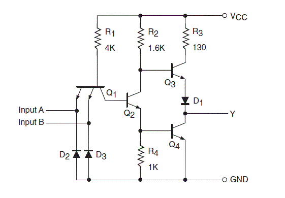
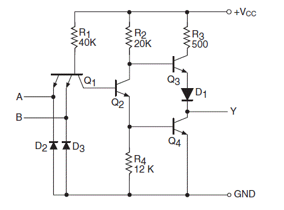
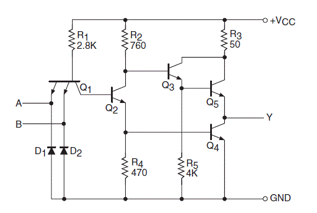
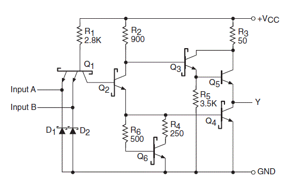

Standard TTL

Standard TTL NAND Gate
The above figure shows the internal structure and characteristics of a standard TTL NAND gate. The NAND gate of it is a quad two input type. And it has four circuits of 5400/740. In plain ways the circuit of this type of TTL operates as follows. The Q1 showed in the figure is a two emitter NPN transistor. This type is NAND gate is analogous to two transistors whose base and emitter terminals are joined together. The diodes named as D2 and D3 are used to limit the input voltages which are negative in nature.
Low Power TTL

NAND Gates in Low Power TTL
This is a subfamily under the main family. This is named so because lower power consumption and dissipation is achieved. Though the speed at which the operation is done is somewhat reduced. The above figure is of a low power TTL which is made using NAND gates. The NAND gate used in this is of 74L00 or 54L00 type and is of quad two input type. The construction of this type of TTL is almost similar to that of standard TTL except the resistance which is of a higher value. For this increased value of the resistance the power dissipation of the circuit is lowered.
High Power TTL

NAND Gates in High Power TTL
Unlike the low power TTL the High power TTL is the high speed edition of the standard TTL. The speed of operation of this type of TTL is more than the previously discussed. The power dissipation for this higher than other previously discussed TTLs. The above diagram is of a high power TTL NAND gate. The NAND gate is a quad two input of type 74H00 or 54H00. The above drawn figure is very similar to that of a standard TTL except Q3 transistor and D1 diode combination, which has been replaced by an arrangement of Q3, Q5 and R5. The speed of operation is higher and the power dissipation is also higher for this type of TTLs.
Schottky TTL

NAND Gates in Schottky TTL
Another TTL subfamily is Schottky TTL. This design was used to speed up the time of operation. The speed offered by this type of TTL is twice the speed that is offered by the high power TTL. The power dissipation for both the TTLs are same and there is no extra power consumption. The figure above represents the basic NAND based diagram of Schottky TTL. The circuit diagram is pretty much similar to that of a high power TTL, here the Q transistor of high power TTL is missing. The Schottky transistor which is used for this type TTL is nothing but a bipolar transistor which has its base and collector connected by a schottky diode. This Schottky TTL is further devided in many parts like low power Schottky, Advanced low power schottky and advanced Schottky whose discussion has been avoided due to complexities.
 by
by